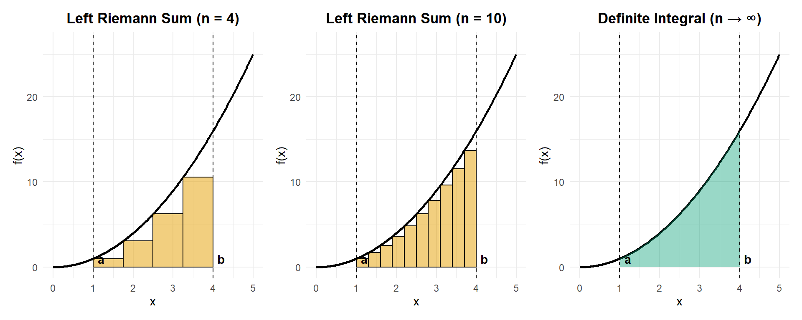
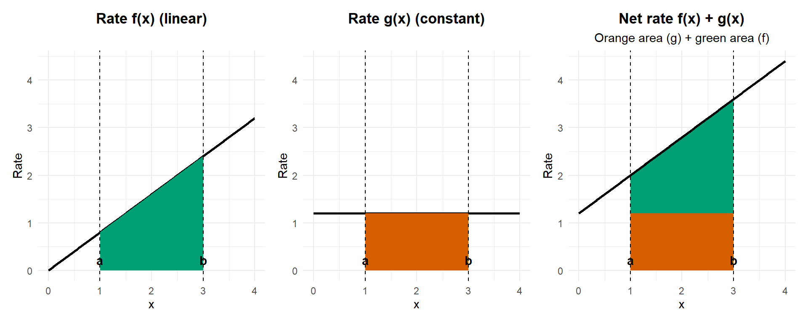
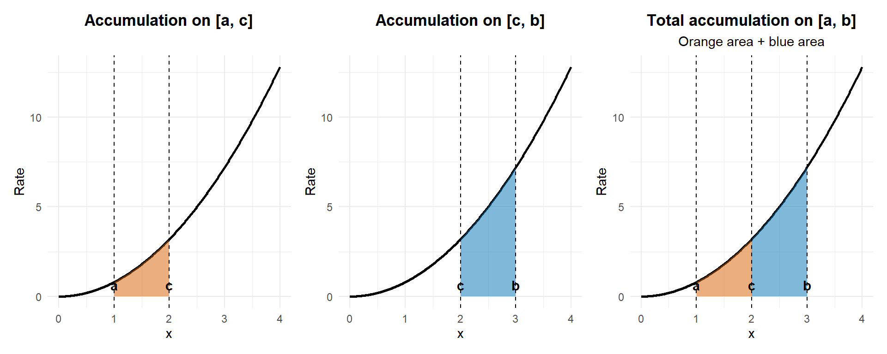
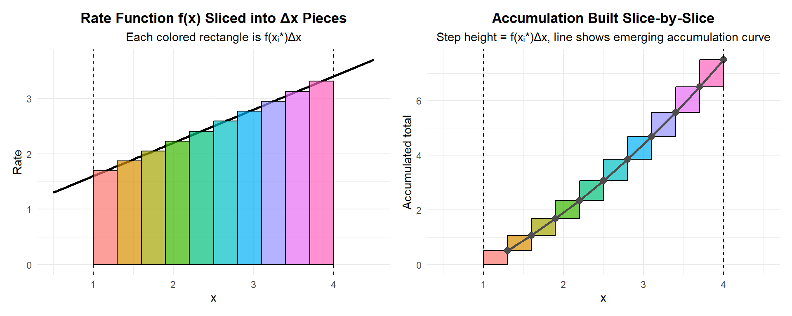
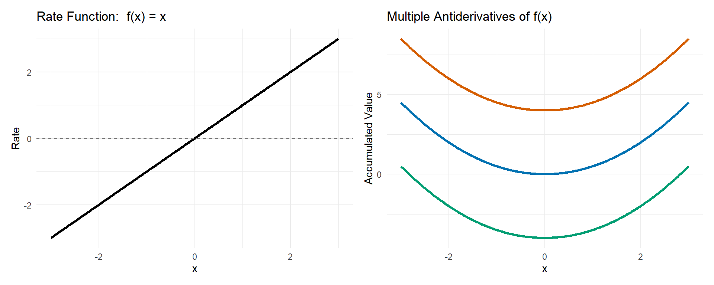
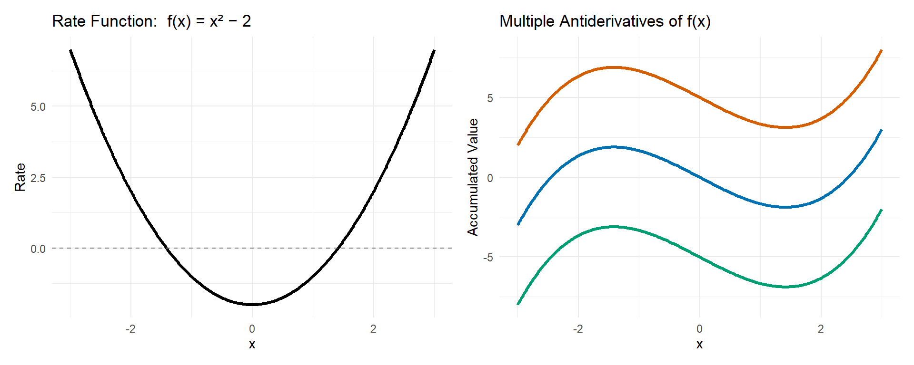
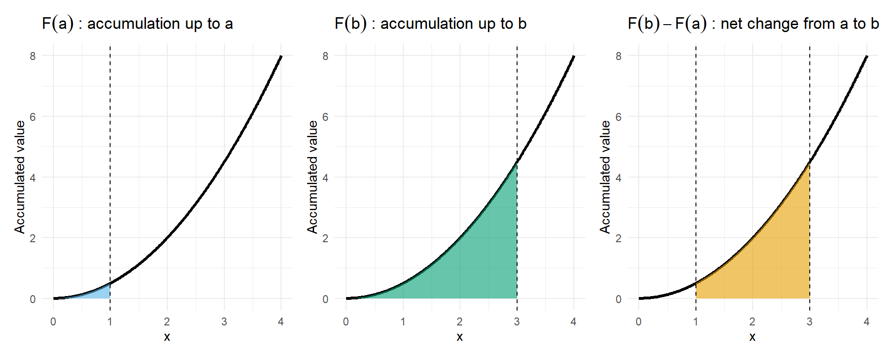

Chapter 4 Definite Integrals and the Fundamental Theorem of Calculus
4.1 Purpose of the Chapter
In the previous chapter, you developed an intuition for accumulation by approximating totals from rates using rectangles, tables, and graphs. You saw how adding up many small contributions can represent meaningful environmental quantities such as total rainfall, streamflow, carbon exchange, or pollutant transport. You also encountered the idea of signed accumulation, where gains and losses can offset each other over time.
This chapter formalizes those ideas.
Here, we move from “adding rectangles makes sense” to “integrals are well-defined mathematical objects with powerful and reliable properties.” You will learn how mathematicians define accumulation precisely, why different approximation methods converge to the same value, and how integrals connect directly back to derivatives through one of the most important results in calculus.
Rather than treating integrals as a new collection of formulas, this chapter emphasizes meaning first. Computation matters, but it is grounded in interpretation: what a definite integral represents, how it behaves, and why it works.
By the end of this chapter, you should clearly understand:
- what a definite integral is and how it arises from limits of Riemann sums,
- why a definite integral represents accumulation, not just area,
- how integration and differentiation are connected, and why they are inverse ideas,
- how to compute definite integrals efficiently and correctly, while still interpreting results in context.
This chapter provides the conceptual foundation for everything that follows in Calculus II. Once the meaning of the definite integral is solid, later topics—techniques of integration, applications, and differential equations—become questions of method rather than mystery.
4.2 From Riemann Sums to Definite Integrals
In the previous chapter, you learned how to approximate accumulation by adding up rectangles under a rate curve. These approximations—left, right, midpoint, and trapezoidal—allowed you to estimate totals from discrete measurements and to reason carefully about overestimates, underestimates, and conservativeness.
In this section, we take the next conceptual step:
why all of these approximations are pointing toward the same value, and how that value becomes the definite integral.
The key idea is that Riemann sums are not the goal—they are a process. The definite integral is what emerges when that process is carried out with infinitely fine resolution.
4.2.1 Riemann Sums as Structured Approximations
A Riemann sum is a structured way to approximate accumulation. It is not a random guess; it follows a clear set of steps:
- Divide an interval \([a,b]\) into subintervals.
- Choose a representative rate within each subinterval.
- Multiply rate by width to estimate accumulation over that slice.
- Add the contributions from all slices.
Each choice—how many slices to use, how wide they are, and where the rate is sampled—represents an assumption about how the system behaves between measurements.
This is exactly how environmental data are often handled in practice:
- we measure at discrete times or locations
- assume behavior between those measurements and
- sum contributions to estimate a total
4.2.2 Partitioning an Interval
The first step in any Riemann sum is partitioning the interval \([a,b]\).
A partition divides the interval into \(n\) subintervals: \[ a = x_0 < x_1 < x_2 < \cdots < x_n = b. \]
When the partition is uniform (all subintervals the same width), each slice has width \[ \Delta x = \frac{b - a}{n}. \]
Conceptually:
- Smaller \(\Delta x\) means finer resolution.
- Larger \(n\) means more detailed sampling.
4.2.3 Width \(\Delta x\) and Resolution
The quantity \(\Delta x\) represents the resolution of our approximation.
- In time-based problems, \(\Delta x\) might represent minutes or hours between measurements.
- In space-based problems, it might represent distance between sampling locations.
- In environmental monitoring, smaller \(\Delta x\) usually corresponds to higher-frequency sensors or denser spatial sampling.
As \(\Delta x\) gets smaller:
- Each rectangle covers a shorter interval.
- The assumption that the rate is “approximately constant” over that interval becomes more reasonable.
- Approximation error decreases.
4.2.4 Sample Points: Left, Right, and Midpoint
Once the interval is partitioned, we must choose where to sample the rate within each subinterval.
For the \(i\)-th subinterval \([x_{i-1}, x_i]\), we choose a sample point \(x_i^*\).
Common choices include:
- Left endpoint: \(x_i^* = x_{i-1}\)
- Right endpoint: \(x_i^* = x_i\)
- Midpoint: \(x_i^* = \tfrac{x_{i-1} + x_i}{2}\)
Each choice reflects a modeling assumption:
- Left sums assume the rate at the start represents the whole interval.
- Right sums assume the rate has already changed to its later value.
- Midpoint sums assume the rate halfway through is most representative.
Importantly, these choices do not define different integrals. They are simply different approximations of the same accumulated quantity.
4.2.5 From Finite Sums to a Limit
A Riemann sum with \(n\) subintervals has the general form: \[ \sum_{i=1}^{n} f(x_i^*)\,\Delta x. \]
This expression represents:
- a finite number of rectangles,
- each contributing a small amount to the total,
- added together to approximate accumulation.
Now imagine increasing \(n\):
- The rectangles become thinner.
- Differences between left, right, and midpoint sampling shrink.
- The total becomes less sensitive to how the sample points are chosen.
This leads to a crucial observation:
As \(\Delta x \to 0\), all reasonable Riemann sums approach the same value.
4.2.6 Why Different Sums Converge to the Same Value
For smooth functions (which model most physical and environmental rates):
- Over very small intervals, the function does not change much.
- Left, right, and midpoint values become nearly identical.
- Rectangles begin to “hug” the curve regardless of sampling choice.
This is why:
- Left sums may start below the curve and right sums above it,
- but as the rectangles get narrower, both collapse toward the same total area.
The definite integral is defined as this common limiting value.
4.2.7 Defining the Definite Integral
We now formalize accumulation using a limit.
The definite integral of \(f(x)\) from \(a\) to \(b\) is defined as: \[ \int_a^b f(x)\,dx = \lim_{n \to \infty} \sum_{i=1}^{n} f(x_i^*)\,\Delta x, \] provided this limit exists.

This definition captures several ideas at once:
- Accumulation is the result of adding infinitely many infinitesimal contributions.
- The exact value does not depend on how we sampled the rate, as long as the sampling is reasonable.
- The integral represents the idealized total we would obtain with perfect resolution.
4.2.8 Conceptual Meaning Over Formal Notation
At this stage, the symbols matter less than the ideas they encode.
The expression \[ \int_a^b f(x)\,dx \] should be read as:
“The total accumulated effect of the rate \(f(x)\) as \(x\) runs from \(a\) to \(b\).”
It is not merely an area formula, and it is not just a new symbol to manipulate. It is a precise way of expressing accumulation that you have already been reasoning about intuitively.
4.2.9 Environmental Framing: Why Resolution Matters
In environmental science, data are almost always discrete:
- streamflow measured hourly,
- pollutant concentrations sampled weekly,
- satellite images taken every few days.
But the processes themselves are continuous.
Riemann sums model how we estimate continuous processes from discrete data. The definite integral represents what we would obtain with infinitely fine measurement resolution.
This framing explains why:
- higher-frequency measurements improve estimates,
- coarse sampling can miss peaks or rapid changes,
- and different estimation methods converge as resolution increases.
4.2.10 Continuous vs. Discrete Data
Riemann sums live at the interface between:
- discrete measurements (what we observe), and
- continuous processes (what we model).
The definite integral represents the continuous ideal that discrete approximations aim to approach.
Understanding this transition is essential for interpreting environmental data responsibly and for recognizing both the power and the limitations of real-world measurements.
4.2.11 Key Takeaway
Riemann sums are not competing formulas—they are stepping stones.
By refining partitions and shrinking \(\Delta x\), all reasonable approximations converge to the same accumulated total. That limiting value is the definite integral, which provides a precise, reliable, and meaningful way to describe accumulation in natural systems.
4.3 Interpreting the Definite Integral
Up to this point, we have focused on how definite integrals are defined and how they arise from increasingly refined approximations. In this section, we shift emphasis from how integrals are constructed to what integrals mean. The goal is to develop a habit of interpretation so that every computed integral is understood as a statement about a real system, not just a numerical result.
A definite integral is a tool for describing total change. That change may represent growth or loss, input or output, gain or depletion. Understanding which of these is being measured—and why—depends on careful attention to meaning, units, and sign.
4.3.1 Definite Integrals as Net Accumulation
At its core, a definite integral measures net accumulation over an interval.
If \(f(t)\) is a rate of change, then \[ \int_a^b f(t)\,dt \] represents the total effect of that rate as time runs from \(a\) to \(b\).
“Net” is the key word:
- Positive values of \(f(t)\) contribute to an increase.
- Negative values of \(f(t)\) contribute to a decrease.
- The integral combines both effects into a single number.
This is why integrals are well suited to modeling systems with competing processes, such as input and removal, growth and decay, or uptake and release.
4.3.2 Signed Area and Physical Meaning
Graphically, a definite integral is often described as the area under a curve. However, this description can be misleading if taken too literally.

A more accurate statement is:
A definite integral is the signed area between the curve and the horizontal axis.
- Area above the axis contributes positively.
- Area below the axis contributes negatively.
This sign convention reflects physical reality:
- A positive rate increases the accumulated quantity.
- A negative rate decreases it.
The sign is not an error or a technicality—it is essential information about the direction of change.
4.3.3 Total Change from a Rate
Many environmental variables are naturally expressed as rates:
- carbon flux (kg C/hr),
- streamflow (m³/s),
- pollutant loading (kg/day),
- energy exchange (W/m²),
- population growth (individuals/year).
In each case, the definite integral converts a rate into a total change over a specified interval.
Conceptually: \[ \text{total change} = \int (\text{rate}) \times (\text{time or space}) \]
This mirrors the familiar calculation \[ \text{amount} = \text{rate} \times \text{time}, \] but allows the rate to vary continuously rather than remain constant.
4.3.4 Units Analysis: Why Units Matter
Units provide one of the most reliable checks on interpretation.
When computing a definite integral, the units of the result come from: \[ (\text{units of } f) \times (\text{units of the variable}) \]
For example:
- \(\text{kg/hr} \times \text{hr} = \text{kg}\)
- \(\text{m}^3/\text{s} \times \text{s} = \text{m}^3\)
- \(\mu\text{mol}/(\text{m}^2\cdot\text{s}) \times \text{s} = \mu\text{mol}/\text{m}^2\)
If the resulting units do not make sense for the quantity being measured, something has gone wrong—either in setup or interpretation.
4.3.5 Positive and Negative Contributions
In many systems, positive and negative contributions occur within the same interval.
Examples include:
- carbon uptake during daylight and release at night,
- stream inflow during storms and outflow during dry periods,
- population growth during favorable seasons and decline during harsh ones.
The definite integral automatically accounts for all contributions and reports their combined effect.
This makes integrals especially powerful for systems where opposing processes operate simultaneously or cyclically.
4.3.6 Net Accumulation vs. Total Accumulation
It is important to distinguish between:
- Net accumulation:
The signed result of the integral, which reflects the overall change. - Total accumulation:
The sum of magnitudes of all positive contributions (often computed by separating regions).
A net value of zero does not imply that nothing happened. It only means that gains and losses balanced over the interval.
Understanding this distinction is essential for correct interpretation in environmental contexts.
4.3.7 Common Pitfalls
Several conceptual errors arise frequently when interpreting definite integrals.
Confusing height with area
The value of the function \(f(x)\) at a point is a rate, not an amount. Only after integrating over an interval does it represent a total.
Ignoring sign
Treating all areas as positive removes crucial information about whether the system gained or lost quantity.
Misinterpreting zero net accumulation
A result of zero often indicates strong internal dynamics rather than inactivity.
Recognizing and avoiding these pitfalls leads to more accurate modeling and interpretation.
4.3.8 Environmental Framing
Definite integrals appear throughout environmental science because they naturally describe systems governed by rates.
Carbon fluxes
Integrals of net ecosystem exchange quantify total carbon gain or loss over days, seasons, or years.
Pollutant loading
Integrating pollutant concentration multiplied by flow reveals total mass transported into or out of a system.
Energy exchange
Integrals of heat flux quantify cumulative energy gain or loss across surfaces or through time.
Population balance
Integrating growth rates shows how populations change when births, deaths, immigration, and emigration compete.
In each case, the integral captures what actually happened over time, not just instantaneous conditions.
4.3.9 Key Takeaway
A definite integral is not just a computational tool. It is a statement about a system.
It tells you how much accumulated, in which direction, and over what interval. Interpreting that statement—by attending to sign, units, and context—is as important as computing the number itself.
4.4 Properties of Definite Integrals
Up to this point, we have focused on what a definite integral represents: accumulation, signed area, and net change from a rate. We now turn to an equally important question:
How do definite integrals behave?
Definite integrals obey a small set of powerful properties that allow us to simplify calculations, combine information, and interpret results more clearly. These properties are not arbitrary rules—they reflect the underlying logic of accumulation and signed area.
Understanding these properties will help you:
- compute integrals more efficiently,
- break complex problems into manageable pieces,
- and reason about environmental systems without always relying on formulas.
4.4.1 Linearity of the Integral
One of the most important properties of definite integrals is linearity. Linearity tells us that integration distributes over addition and scaling.
4.4.1.1 Adding Rates
If two rate functions \(f(x)\) and \(g(x)\) describe independent processes occurring over the same interval \([a,b]\), then their combined accumulation is simply the sum of their individual accumulations:
\[ \int_a^b [f(x) + g(x)]\,dx = \int_a^b f(x)\,dx + \int_a^b g(x)\,dx. \]

Conceptual meaning:
Adding rates adds their contributions at every moment. Because accumulation is built from adding many small pieces, we are free to add those pieces before or after integrating.
Environmental example:
- \(f(x)\): carbon uptake by photosynthesis
- \(g(x)\): carbon release by respiration
The integral of \(f(x)+g(x)\) gives net ecosystem carbon exchange, while integrating them separately allows us to examine each process individually.
4.4.1.2 Scaling a Rate
If a rate is multiplied by a constant factor \(c\), the total accumulation is also multiplied by that factor:
\[ \int_a^b c f(x)\,dx = c \int_a^b f(x)\,dx. \]
Conceptual meaning:
If every small contribution is scaled by the same amount, the total accumulation scales in the same way.
Environmental example:
- Doubling pollutant concentration at all times doubles the total pollutant load.
- Converting units (e.g., from mg to g) simply rescales the integral.
4.4.2 Additivity Over Intervals
Definite integrals can be broken into pieces. If \(c\) lies between \(a\) and \(b\), then
\[ \int_a^b f(x)\,dx = \int_a^c f(x)\,dx + \int_c^b f(x)\,dx. \]

Conceptual meaning:
Accumulation over a long interval is just the sum of accumulations over shorter subintervals.
This property formalizes what you already do intuitively when you:
- add hourly streamflow to get daily discharge,
- add daily carbon uptake to get seasonal totals,
- or sum storm-by-storm nutrient export to estimate annual load.
Environmental example:
Breaking a year into seasons allows you to analyze how much accumulation occurs during wet vs. dry periods without changing the total.
4.4.3 Reversing the Limits of Integration
The direction of integration matters. Reversing the limits of integration changes the sign of the result:
\[ \int_a^b f(x)\,dx = - \int_b^a f(x)\,dx. \]
Conceptual meaning:
Integrating “backwards” reverses the direction of accumulation. Because integrals track net change, direction carries information.
This property reinforces an important idea:
The sign of an integral is not optional—it encodes direction.
Environmental example:
- Integrating forward in time gives net gain or loss.
- Integrating backward in time reverses the sign, reflecting reversal of the process.
4.4.4 Integrals of Constant Functions
If the rate is constant, integration reduces to a familiar calculation:
\[ \int_a^b c\,dx = c(b - a). \]
Conceptual meaning:
When nothing changes, accumulation is simply
\[
\text{rate} \times \text{duration}.
\]
This case anchors the integral to everyday reasoning and helps validate more complex results.
Environmental example:
- Constant streamflow over a fixed time interval
- Constant heat flux over a period of stable conditions
4.4.5 Why These Properties Matter
These properties are not just mathematical conveniences—they shape how we think about accumulation.
They allow us to:
- Simplify calculations by breaking problems apart,
- Check results for consistency and reasonableness,
- Interpret models in terms of real processes,
- and scale up from small measurements to large conclusions.
Just as importantly, these properties prepare us for:
- the Fundamental Theorem of Calculus,
- integration techniques,
- and more advanced modeling of environmental systems.
By mastering these behaviors now, you build a toolkit that makes integrals flexible, interpretable, and powerful—far more than just areas under curves.
4.5 The Fundamental Theorem of Calculus (Part I)
4.5.1 Big Idea
The Fundamental Theorem of Calculus (Part I) formalizes a powerful and intuitive idea you have already been using informally:
If you accumulate a quantity by adding up a rate, then the rate of change of that accumulation is the original rate itself.
In other words, accumulation functions have derivatives equal to the rate being accumulated.
This result is not a computational trick—it is a deep conceptual link between the two central ideas of calculus: rates of change and accumulated change.
4.5.2 Accumulation as a Function
Up to this point, students have treated accumulation as a number:
- total water volume,
- total pollutant load,
- total carbon uptake over a fixed interval.
Now we shift perspective.
Instead of asking:
“How much has accumulated between time \(a\) and time \(b\)?”
we ask:
“How much has accumulated from time \(a\) up to an arbitrary time \(x\)?”
This leads naturally to the idea of an accumulation function.
If \(f(t)\) is a rate (for example, m³/hr, kg/day, or individuals/year), we define the accumulation function: \[ A(x) = \int_a^x f(t)\,dt. \]
Key features of this definition:
- The lower limit \(a\) is fixed.
- The upper limit \(x\) is variable.
- The output \(A(x)\) represents total accumulation up to time \(x\).
So \(A(x)\) is not just a number—it is a function.
4.5.3 What the Theorem Says (Conceptually)
The Fundamental Theorem of Calculus (Part I) states:
If an accumulation function is defined by \[ A(x) = \int_a^x f(t)\,dt, \] then \[ A'(x) = f(x). \]
Conceptually, this means:
- The instantaneous rate of change of the accumulated total
- is exactly the original rate function.
This matches intuition:
- If water is flowing into a tank at 5 m³/hr at a given moment, then
- the total amount of water in the tank is increasing at 5 m³/hr at that moment.
Accumulation builds from the rate, and differentiation recovers that rate.
4.5.4 Why Differentiation and Integration Are Inverses
This theorem explains why derivatives and integrals undo each other.
- Integration takes a rate and produces total change.
- Differentiation takes total change and produces a rate.
They are inverse processes because:
- integration answers “how much has accumulated?”
- differentiation answers “how fast is that accumulation changing right now?”
This is not an algebraic coincidence—it reflects how physical systems behave.
4.5.5 Visual Intuition

The figure above shows how an accumulation function is built directly from a rate function, one small piece at a time.
Left panel: Rate sliced into pieces
- The curve represents a rate function \(f(x)\).
- The interval from \(a\) to \(b\) has been divided into many small widths \(\Delta x\).
- Each colored rectangle represents a single contribution: \[ \text{(rate at that slice)} \times \Delta x = f(x_i^*)\,\Delta x. \]
- These rectangles are not the accumulation themselves — they are the ingredients that will be added together.
At this stage, nothing is smooth yet. We are simply accounting for how much “change” each small slice contributes.
Right panel: Accumulation built slice-by-slice
- The right panel shows what happens when those colored pieces are added cumulatively.
- Each step corresponds to adding one rectangle from the left panel.
- The height of each step is exactly the area of one colored slice.
- The colors match between panels to emphasize that each piece of area becomes one jump in accumulation.
The black line connecting the tops of the steps hints at what happens as \(\Delta x\) gets smaller: the accumulation function begins to look smooth.
Connecting the two panels
Define the accumulation function \[ A(x) = \text{area under } f \text{ from } a \text{ to } x. \]
- When \(x\) moves slightly to the right by \(\Delta x\), the added accumulation is approximately: \[ \Delta A \approx f(x)\,\Delta x. \]
- Dividing by \(\Delta x\) gives: \[ \frac{\Delta A}{\Delta x} \approx f(x). \]
- As the slices become thinner, this approximation becomes exact.
Key insight
The slope of the accumulation function at \(x\) equals the height of the rate function at \(x\).
This is the heart of the Fundamental Theorem of Calculus (Part I): integration builds accumulation, and differentiation recovers the original rate.
Rather than being a formula to memorize, the theorem is a statement about how adding tiny pieces of change creates a function whose slope is the rate that generated it.
4.5.6 What to Avoid at This Stage
It is tempting to jump directly to formulas and shortcuts, but doing so weakens understanding.
Avoid:
- Treating the theorem as merely a way to “cancel” integrals and derivatives.
- Focusing on symbolic manipulation before meaning is clear.
- Introducing antiderivative notation before you grasp accumulation as a process.
At this stage, the emphasis is conceptual, not procedural.
4.5.7 Environmental Framing
The theorem can be summarized in plain language:
If I know the rate of a process at every moment, then I can recover the total change—and if I track total change over time, its derivative tells me the rate.
Environmental interpretations include:
- Streamflow rate → accumulated discharge
- Carbon flux → total carbon stored
- Population growth rate → total population change
- Energy flux → total energy transferred
This principle underlies nearly every quantitative model in environmental science.
4.5.8 Key Takeaway
The Fundamental Theorem of Calculus (Part I) tells us that:
- Accumulation and rate are not separate ideas.
- They are two perspectives on the same process.
- Calculus provides the precise language connecting them.
Understanding this connection sets the stage for computing integrals efficiently without losing sight of what they mean.
4.6 The Fundamental Theorem of Calculus (Part II)
Up to this point, we have built integrals from the ground up:
- as sums of small pieces,
- as limits of better and better approximations,
- and as accumulation driven by a changing rate.
All of that work answered an important conceptual question:
What does an integral mean?
Part II of the Fundamental Theorem of Calculus answers a different question:
How do we compute an integral efficiently and exactly?
Rather than adding infinitely many tiny rectangles by hand, the theorem shows that accumulated change can be found by working with an antiderivative.
At its core, the theorem states:
\[ \int_a^b f(x)\,dx = F(b) - F(a), \]
where \(F'(x) = f(x)\).
This formula is powerful — but it only makes sense because of everything that came before.
4.6.1 Step 1: Accumulation Is a Function
Fix a starting point \(a\), and define a function:
\[ A(x) = \int_a^x f(t)\,dt. \]
This function represents:
- the total accumulated change from \(a\) to \(x\),
- built from the rate \(f(t)\),
- using the ideas of Riemann sums and limits.
From Part I of the Fundamental Theorem of Calculus, we know:
\[ A'(x) = f(x). \]
That is, the derivative of the accumulation function equals the rate.
So \(A(x)\) is an antiderivative of \(f(x)\).
4.6.2 Step 2: Antiderivatives Are Not Unique
There is only one derivative for a function. However, there are an infintie number of antiderivates to function.
Lets see if we can understand this graphically.


The figures above show two paired examples.
In each pair:
- The left panel shows a rate function.
- The right panel shows several possible antiderivatives of that rate.
These pairs illustrate two equally important ideas:
- The right-hand curves are antiderivatives of the left-hand curve.
- The left-hand curve is the derivative of every curve on the right.
Both perspectives matter.
Example 1: Rate \(f(x) = x\)
In the top pair of plots:
- The left panel shows the rate function \(f(x) = x\).
- The right panel shows several curves of the form: \[ F(x) = \tfrac12 x^2 + C. \]
All of the curves on the right have different vertical positions, but they share the same shape.
Why?
- The slope of each curve on the right at any value of \(x\) is exactly \(x\).
- That slope matches the height of the rate function on the left.
So:
- If you start with the rate \(f(x) = x\) and accumulate, you get a parabola.
- If you start with any of the parabolas on the right and differentiate, you recover the line \(f(x) = x\).
The constant \(C\) only changes where accumulation starts — not how it grows.
Example 2: Rate \(f(x) = x^2 - 2\)
In the bottom pair of plots:
- The left panel shows the rate function \(f(x) = x^2 - 2\).
- The right panel shows several curves of the form: \[ F(x) = \tfrac13 x^3 - 2x + C. \]
Again, the curves on the right are vertically shifted versions of one another, but they all share the same overall shape.
What connects the two panels?
- Wherever the rate on the left is positive, the antiderivative on the right is increasing.
- Wherever the rate on the left is negative, the antiderivative on the right is decreasing.
- Where the rate crosses zero, the antiderivative has a horizontal tangent.
This shows that the behavior of the accumulation function is completely determined by the rate.
The Two-Way Relationship
These examples highlight a key idea of calculus:
- Differentiation moves from accumulation to rate.
- Integration moves from rate to accumulation.
The left panel answers the question:
How fast is the quantity changing right now?
The right panel answers the question:
How much has the quantity changed overall?
They are two views of the same process.
4.6.3 Step 3: Why the Constant Does Not Matter for Definite Integrals
The definite integral \[ \int_a^b f(x)\,dx \] asks:
How much has accumulated between \(x = a\) and \(x = b\)?
Using the accumulation function: \[ \int_a^b f(x)\,dx = A(b) - A(a). \]
But since \(F(x) = A(x) + C\), \[ F(b) - F(a) = [A(b) + C] - [A(a) + C]. \]
The constant cancels: \[ F(b) - F(a) = A(b) - A(a). \]
So any antiderivative produces the same net change, even if it is shifted up or down.
4.6.4 Step 4: What the Formula Is Really Saying
When we write: \[ \int_a^b f(x)\,dx = F(b) - F(a), \] we are not using a shortcut or a trick.
We are doing the following:
- building accumulation conceptually (Part I),
- recognizing that accumulation is an antiderivative,
- and measuring how much that accumulation changes over an interval.
The formula works because integration and differentiation are inverse processes, not because we memorized a rule.
4.6.5 Key Takeaway
The definite integral measures net accumulated change.
Antiderivatives allow us to compute that change exactly, because subtracting values automatically removes any constant offset.
This is why the Fundamental Theorem of Calculus is not just a computational tool — it is a precise statement about how rates, accumulation, and change are connected.
4.6.6 What the Formula Means
The expression \[ F(b) - F(a) \] should be read as:
- \(F(a)\): the accumulated amount up to the starting point
- \(F(b)\): the accumulated amount up to the ending point
- The difference: how much was added (or removed) between \(a\) and \(b\)

In other words:
A definite integral measures change, not just area.
4.6.7 Key Skills You Will Use
1. Identifying Antiderivatives
To apply the theorem, you must recognize or compute a function \(F(x)\) such that: \[ F'(x) = f(x). \]
This draws directly on your derivative knowledge from Calculus I.
Examples:
- If \(f(x) = x^2\), then \(F(x) = \tfrac{x^3}{3}\).
- If \(f(x) = \sin x\), then \(F(x) = -\cos x\).
- If \(f(x) = e^x\), then \(F(x) = e^x\).
2. Evaluating at the Bounds
Once an antiderivative is found:
- Evaluate it at the upper bound \(b\).
- Evaluate it at the lower bound \(a\).
- Subtract: \[ F(b) - F(a). \]
This step reflects the idea of accumulation over an interval, not a single point.
3. Interpreting the Result
The numerical value you obtain always represents a net accumulation:
- Positive value → net gain
- Negative value → net loss
- Zero → gains and losses balance
The meaning depends entirely on the context of the rate:
- water volume,
- carbon exchange,
- energy transfer,
- population change.
Units follow naturally:
(rate units) × (input units) = accumulated units
4.6.8 A Simple Environmental Interpretation
Suppose \(f(t)\) represents carbon flux (kg/hr).
Then: \[ \int_a^b f(t)\,dt \] means:
the net amount of carbon added to or removed from a system between times \(a\) and \(b\).
Computing this as \(F(b) - F(a)\) is not skipping the accumulation process — it is using the mathematical structure of accumulation functions to compute it exactly.
4.6.9 Critical Emphasis: More Than Plug-and-Chug
It is tempting to treat \[ \int_a^b f(x)\,dx = F(b) - F(a) \] as a recipe:
- Find an antiderivative.
- Plug in numbers.
- Subtract.
But without understanding why this works, it is easy to:
- lose track of units,
- misinterpret negative results,
- forget what is actually accumulating,
- or treat integrals as purely symbolic exercises.
The formula works because integration and differentiation describe opposite sides of the same process:
- differentiation tracks instantaneous change,
- integration reconstructs total change from that information.
4.6.10 Key Takeaway
The Fundamental Theorem of Calculus (Part II) gives us an efficient way to compute accumulation — but its meaning comes from Part I.
Definite integrals are not defined by antiderivatives.
Antiderivatives are a powerful tool for computing definite integrals that already have a clear conceptual meaning.
Understanding this connection allows you to compute integrals confidently and interpret them correctly in real environmental systems.